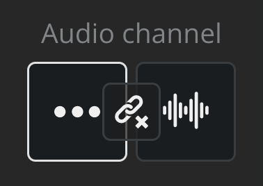
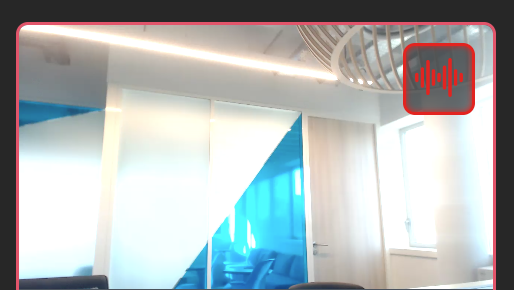

Using the Dazzl platform, you can choose to select a different audio and video source.

In order to do this, go to the control room ("production" tab), and click on "audio channel", as showed by the following animated image :

Select the audio source you want, a red sign will appear on it.

You will then be able to choose which of your sources is used as an audio input, and which as the video.
You can change the audio source and its volume at any time, even when broadcasting you live.